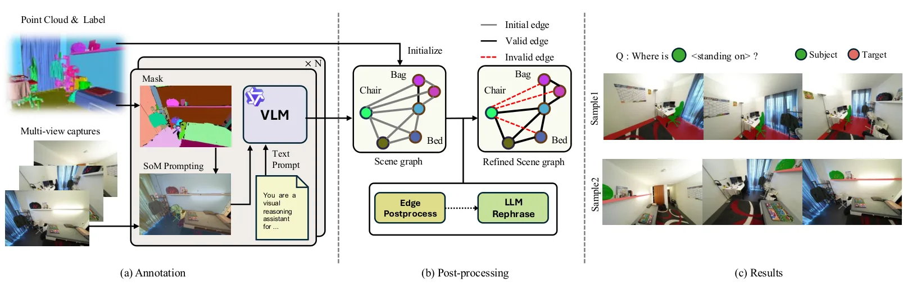
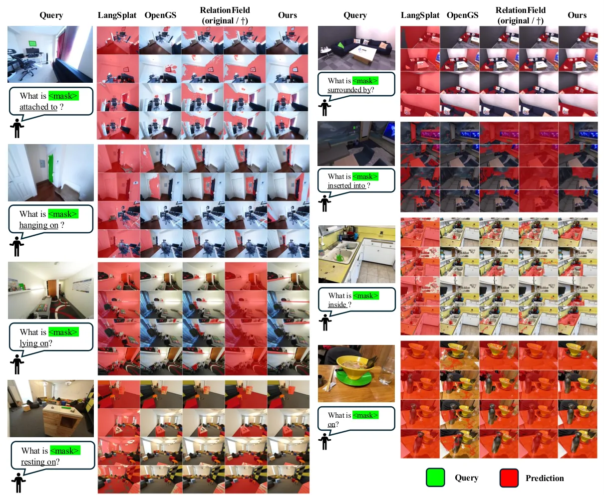
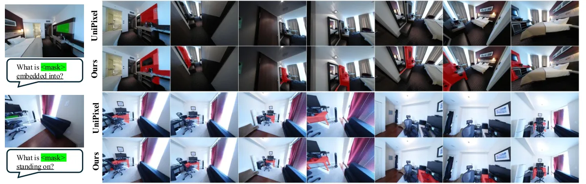

RelationVGGT：用视觉几何 Transformer 做 3D 空间关系分割
RelationVGGT: Visual Geometry Transformers for 3D Spatial Relation Segmentation
前馈、无位姿的多视图 3D 关系分割：融合 DINOv2 语义与 Pi3 几何特征、用关系 Transformer 做主体条件化跨视图预测；三个基准平均 mIoU 0.382、mAcc 0.549（RelationField 0.303/0.480），推理 26 ms 对逐场景优化方法 288 s/查询。
mIoU/mAcc
mIoU/mAcc
latency
ablation
作者、单位与技术谱系 · Research context
作者与单位
研究脉络
- DUSt3R / VGGT方法基座关系：直接以 VGGT/Pi3 这类前馈视觉几何模型作为几何骨干，取代逐场景重建。[论文第 1 节与参考[3][4]]
- RelationField（Koch et al., 2025）上游对照关系：在辐射场上学习物体间关系，但依赖逐场景优化与标定相机位姿。[论文第 2 节]
- 本篇推进：前馈无位姿关系分割本篇推进关系：把关系分割从逐场景优化改为冻结几何/语义骨干上的前馈推理。[论文第 1 节贡献列表]
合作网络
- Yonsei University ↔ NVIDIA 跨机构署名Yonsei University（Kim, Lee, Kim） → NVIDIA（Choe, Wang）关系：共同署名[arXiv 首页署名]
- 对 ScanNet++ 的明确数据依赖自动化标注流水线 → ScanNet++关系：明确技术依赖[论文第 3.5 节与附录 A]
作者与单位取自 arXiv 首页署名；脉络依据论文引用与自述；未发现公开代码声明，故不登记代码节点。
方法本质拆解 · What actually changed
是不是微调？
是训练轻量新增模块：DINOv2 与 Pi3 编码器提供冻结特征，可学的是输入混合器、关系 Transformer 与 DPT 掩码解码器；论文未声明微调两个骨干。监督用多查询 sigmoid focal loss + Dice，在 ScanNet++ 自动标注数据上训练。
有没有额外约束？
没有显式硬几何约束：几何主要以 Pi3 token 的形式作为输入先验，另用 Pi3 点解码器输出点图+置信度把关系特征挂到 3D 点。监督上关键约束是「多查询」——同一掩码由多个语义等价谓词监督，以及推理固定阈值 τ=0.3。
推理/后端到底做了什么？
推理是单次前馈：抽取 DINOv2/Pi3 特征→输入混合器融合→关系 Transformer→DPT 解码→与文本嵌入点积→sigmoid 阈值成掩码，全程 26 ms，无逐场景优化、无 BA、无相机位姿求解。这也是它与 RelationField 的最大区别。
方法本质是什么？
本质是把「关系推理」挂到冻结的几何基础模型 token 上：几何 token 提供视图不变的结构，语义 token 提供物体级线索，关系 Transformer 用主体掩码后的参考 token 条件化目标视图，从而在无位姿、无重建的情况下跨视图一致地定位目标。它没有做的是显式 3D 重建与功能关系建模。
输入为多视图图像+主体掩码+关系文本；改变的位置是用冻结 DINOv2/Pi3 特征加轻量关系 Transformer 替代逐场景优化；约束/合并动作是多查询 focal+Dice 监督、推理固定阈值；直接效果是单次前馈 26 ms 跨视图分割目标。

动机与问题Motivation
动机与问题
前馈几何（DUSt3R、VGGT）已能直接从多视图预测稠密 3D，但语义理解仍停留在物体级，忽略「A 在 B 上面」这类物体间关系。已有关系方法（如 RelationField）要在辐射场上做逐场景优化、并依赖标定相机位姿，限制了扩展到未见场景的能力。论文要问的是：能否在无位姿、无逐场景优化的条件下，仅凭视觉指定的主体与关系文本，跨视图分割出满足该关系的目标。
方法Method
方法总览
特征侧从输入图像集抽取两条稠密表示：DINOv2 提供物体级语义，Pi3 编码器 token 提供多视图几何；两条流在公共 patch 网格上经输入混合器融合为联合 token。关系侧不把主体压成单个向量，而是保留参考视图的完整 patch token 并掩掉非主体 patch，得到主体掩码后的参考 token；目标视图 token 堆叠成序列。关系 Transformer 交替执行「主体条件化交叉注意力」与「全局自注意力」，再经 DPT 掩码解码器上采样成像素对齐的关系特征图。
关键技术细节
训练监督用多查询 sigmoid focal loss + Dice：同一目标掩码由多个语义等价的谓词同时监督，避免单标签分类惩罚合理替代词。推理时用关系特征与文本嵌入的相似度 z_t(u,q)=r_t(u)ᵀe(q)，直接对 sigmoid 取固定阈值 τ=0.3 得到二值掩码，作者称无需负提示归一化。另外用 Pi3 点解码器预测点图与置信度图，把关系特征关联到 3D 点，得到带置信度的跨视图 3D 关系表示。

实验Experiments
实验设置
基准为 Replica、LERF、ScanNet++ 三个分割 split，共 119 个查询、28 种谓词；主指标 mIoU，辅以 mAcc（IoU>0.25 的查询比例）。对照包括 LangSplat、OpenGaussian、RelationField（及其无目标检索变体 RelationField†），以及把多视图当视频的 VideoLISA、SA2VA、UniPixel。消融在 ScanNet++ 上（40 查询、τ=0.3）进行；另用附录做主体掩码扰动、谓词改写、效率对照（26 ms 对 288 s/查询）。
实验数字与比较
主表（论文表 1）：Ours 平均 mIoU 0.382 / mAcc 0.549，Replica 0.446/0.640、ScanNet++ 0.445/0.675、LERF 0.254/0.332；RelationField 0.303/0.480、OpenGaussian 0.255/0.367、LangSplat 0.141/0.191。相对视频基础模型（论文表 2）：按相机基线分 Small/Medium/Large 三组，Ours 为 0.417/0.550、0.404/0.640、0.366/0.575，而 UniPixel 随基线增大退化到 0.354/0.475。效率（论文附录表 9）：Ours 单次推理 26 ms，RelationField 每关系查询 288 s 且需每场景 3 小时以上优化。
消融/失败边界
输入特征消融（论文表 3）：Ours 0.445/0.675；改用 3D pointmap+位置编码 掉到 0.370/0.568；仅 Pi3 0.422/0.579；仅 DINOv2 0.370/0.579，说明两路特征互补。结构与目标消融：仅交叉注意力 0.399/0.579、交替注意力 0.394/0.571、单标签 focal 0.406/0.604、去掉几何边过滤 0.398/0.625，均低于完整模型。失败边界：装饰密集的 LERF 桌面场景所有方法都变差；标注流水线依赖 ScanNet++ 这类带实例标注的数据集；论文只建模物体-物体关系，不覆盖功能关系。
局限与迁移Limitations & Transfer
局限与待核验
作者明确承认三点：数据生成依赖像 ScanNet++ 这种有实例级标注的数据集，扩展到无标注/在野场景是未来方向；用 Set-of-Mark 提示经 VLM 抽关系仍可更准更高效；只建模物体-物体空间关系。我们的待核验项：mAcc 阈值 0.25 与 mIoU 的口径差异使跨方法比较需谨慎；自动化标注质量虽有审计（精确率 36.4%→67.2%），但引入的监督噪声对下游的影响未做敏感性实验。
与你研究路线的关系
可迁移模块是「冻结几何基础模型 token + 轻量关系头」的组合：我们能直接借到我们的融合/建图前端里，把 VGGT/Pi3 几何 token 交给一个关系头做语义-几何联合查询。第二是可迁移的自动化标注流水线：用 VLM/LLM 在多视图上生成关系监督，可复用于给我们的场景图/地标打标签。下一步最小实验：用我们的序列复现「pointmap 直接输入 vs 学到的几何 token」的对照，验证几何 token 是否比裸坐标更利于下游关系/地标关联。



